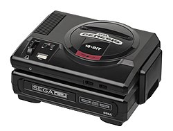
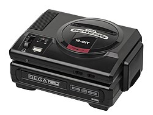

The 1983 crash of the home console market left many companies bankrupt and removed Atari, one of the largest companies, from the market.
Sales were so bad that Atari destroyed unsold stock, burying games in the New Mexico desert. The only player left stand was Nintendo, holding a 90%+ share of the market, a market that had collapsed from 3.2billion in 1983 to 100million by 1985.
Largely unaffected by the crash in US, the large electronic companies in Japan continued to develop home consoles. NEC, Nintendo, Microsoft Japan and Sega all developed consoles for the home market.
Back in America Nintendo's 8bit NES console was the only machine standing. With no competion Nintendo became very comfortable.

SEGA Japan were looking to move from the arcade market. SEGA's intial system, branded the Master System, had an 8bit CPU. Although slightly more powerful than the Nintendo it had no real market impact.
As Nintendo's dominance continued SEGA went back to design. In Japan NEC had started to develop a 16bit machine. SEGA followed, using technology from its popular arcade machines.

In October 1988 SEGA released the Mega Drive to the Japanese market. Well recieved by critics the launch was largely over shadowed by the release of Super Mario Bros 3 on the Nintendo.
Copyright forced the SEGA to launch the console in America as the Genesis. Struggling for a distributor SEGA decided to use their largely dormant SEGA US company to launch the product.
The Genesis hit the US in October 1989 and immediatley met oppostion. Nintendo's dominance ment that software companies were reluctant to license games to SEGA. Distributors loyal to Nintendo were reluctant to stock the Genesis.
SEGA struggled to gain market traction. A new approach would be needed.

SEGA decided to seek celebrity endorsements, paying sports and entertainment stars for naming rights to create their own unique catalogue of games. Software companies followed the stars, keen to attach their products to star names and sporting franchises.
By 1991 SEGA US were still unhappy with sales and so hired Tom Kalinske. Kalinske had massive success as CEO of toy maker Mattel but his 'western' approach to business, pricing and advertising strategy put him in direct conflict with SEGA Japan.

Although a Japanese company the US offices of SEGA saw themselves as very much an American company and free from the culture and approach of its parent company in Japan. Shedding Japanese business culture and tradition SEGA US set about directly attacking Nintendo.
Under Kalinske, SEGA US began an aggressive TV and print advertising campaign attacking the technically inferior NES. This approach pitted SEGA US against Nintendo AND SEGA HQ in Japan. SEGA in Japan feeling very upset with their US counterparts.

SEGA US decided they needed their own mascot to challenge Mario, Nintendo's must iconic creation. Enter Sonic.
Sonic had speed, attitude and aggression and he was here to take down Mario. The aggressive marketing and SEGA's newest creation, Sonic, started to find fans in America. Gaming consoles were now becoming cool. Advertising had pushed the gaming industry into pop culture and SEGA began attracting adults and not just kids.

SEGA had captured the market. By the start of 1993 SEGA had a 55% share, a massive difference to 1990 when Nintendo controlled a 90% share.
In retaliation Nintendo launched a successor to the NES, their own 16bit machine named the Super Nintendo or SNES for short. The two consoles battled on, this time SEGA holding the advanatage with games developers.

Although a massive technical improvement over the NES, the SNES was stuggling against the now dominant Genesis. SEGA out sold Nintendo for four consecutive Christmas seasons.
So happy were SEGA with their console they began to develop hardware add-on's to future proof, one such add-on being the MEGA CD.
  >
 >
With new competitors on the horizon and a market demand for 32bit consoles SEGA were caught in limbo. SEGA US proposed yet another hardware add-on, the 32X.
SEGA US believed this add-on, which plugged into the cartridge slot, would extend the life of the Genesis pending the release of the Saturn. The Saturn would be the replacement to the Genesis.
SEGA Japan wanted to focus on the Saturn. The dispute caused issues with both consoles. The 32X was poorly supported, expensive and badly recieved by the market.

The SEGA Saturn launched in November 1994, a CD based system that moved away from cartridges. It would sell 9.2million units, over 20million less that the Genesis.
The massive success of the Genesis had caused SEGA to lose focus, there was a clear divide between there US and Japanese offices and just appearing on the horizon was Sony and the Playstation.

The Genesis/Mega Drive came from no where to achieve dominance, king of the cartridge based consoles. SEGA US had changed the console market for ever. They had made gaming attractive to the adult market and popularised the licensing of sports franchises, motion pictures and celebrity in the gaming and software industry.